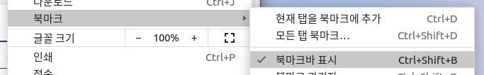
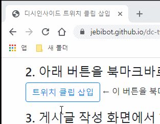
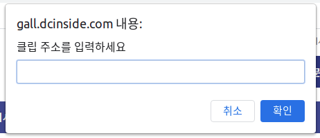

A. 즐겨찾기 (북마크) 방식
1. 메뉴 > 북마크 > '북마크바 표시'를 활성화합니다.
2. 아래 버튼을 북마크바로 드래그하여 즐겨찾기로 추가합니다.
트위치 클립 삽입 ← 이 버튼을 북마크바로 드래그 하세요.

3. 게시글 작성 화면에서 해당 북마크를 클릭한 후 클립 주소를 입력합니다.
안드로이드 Chrome
1. PC에서 위 북마크를 추가한 후 동기화합니다.
2. '데스크톱 사이트'를 활성화합니다.
3. 게시글 작성 화면에서 주소창을 통해 해당 북마크를 검색하여 클릭한 후 클립 주소를 입력합니다.
B. 확장 프로그램 방식
1. Chrome 웹스토어에서 다음 확장 프로그램을 설치합니다.

2. 게시글 작성 화면에서 '외부컨텐츠' 삽입을 클릭합니다.